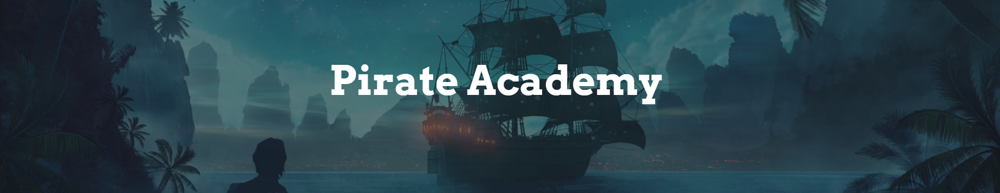

Pirate Academy
Description
Remi Sécher - Core Team Manager
Thomas Depraz-Depland - Gameplay Programmer
Nicolas Capelier - Gameplay Programmer
Samuel Dubois - Gameplay Programmer
William Schmidt - Sound Designer
Mathis Duperray - Sound Designer
Mathieu Van Cappelen - Sound Designer
Arthur Deleye - Game Artist
Manon Ghignoni - Game Artist
Marianne Cetkovic - Game Artist
Context
Pirate Academy was a pure game designer project. As a matter of fact, the team was composed of 45 game designers. We had to create every aspect of the game ourselves. We had few constraints, the theme of the game was decided by vote, and we just had to respect the WarioWare base constraints such as the rhythm, the sequence of mini-game etc...
About Pirate Academy
Pirate Academy is about a pirate crew that tries to pass their pirate exam. They sail on the sea, navigating between islands, trying to survive the mini-game on the way to the Boss.
My Work
As part of the core programming team, I was in charge of developing the macro-game, (meaning the game holding all the mini-games). Personally, I developed various features, like the shop, the inventory, the player movement between islands and a lot of smaller sub-features. At the beginning of the project we also had to evaluate the technical feasibility of the various projects presented for the vote. We had to create a very large and comprehensive documentation on how one would create his mini-game and the various guidelines to use the Unity Project.
Conclusion
As a gameplay programmer this was a very challenging project. We had to bear a lot of responsibilities toward the rest of the team and it was a lot of pressure to deal with but it was motivating nonetheless. Creating the documentation was also a difficult exercise and I learned a lot from it. I am really glad about how the game turned out, even though there are still a few minor bugs waiting to be fixed. It was a whole new experience to work in such a large group as it allowed us to be more specialized in our work and do what we do best.